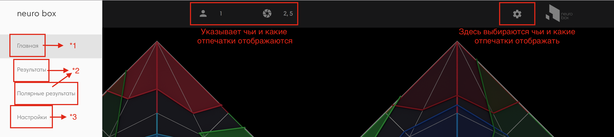

Данный сайт создавался для того чтобы была возможность в современном формате презентовать результаты тестирования. В настоящий момент человек проходит тест в Microsoft Excel, после чего результаты тестирования заносятся в графическую программу которая после продолжительной, но верной обработки возвращает изображения. Эти изображения уходят в папку XYZ после чего они оторажаются на даннном сайте. Практически каждый элемент на этом сайте можно изменить под наши потребности. Сайт полностью автономен с точки зрения интернета, для его работы он не требуется и никакими данными не обменивается.
В данном сайте есть 4 основных раздела:
Данные разделы можно найти в главном меню
Чтобы открыть меню, надо нажать на иконку в верхнем левом углу.